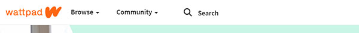
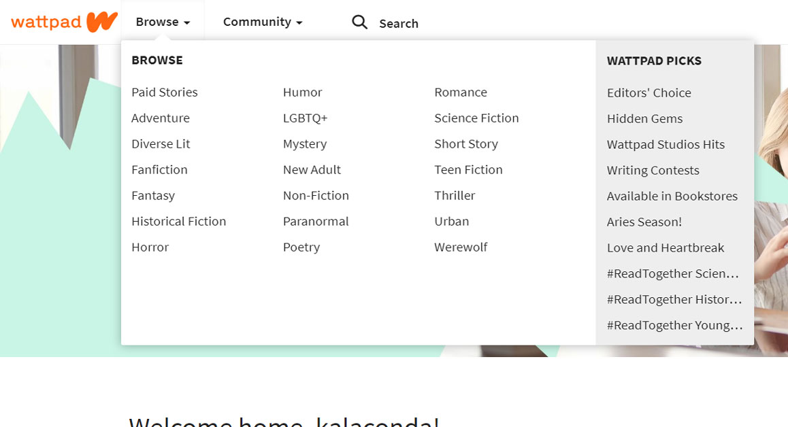
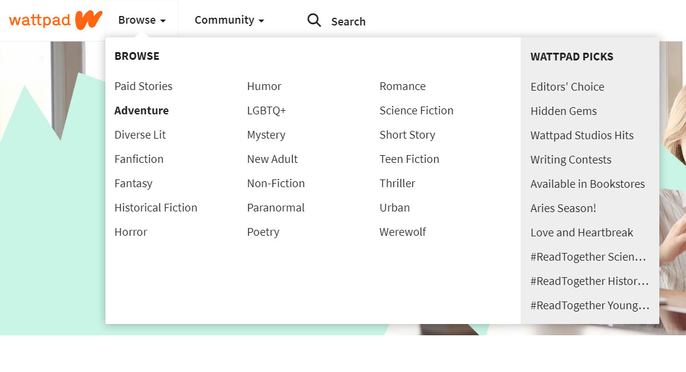

IDM241 Beta
For this assignment, the microinteraction that I chose to redesign is Wattpad's browse menu. Wattpad is a website for aspiring writers to write their own books/stories as well as browse other user's creations. You can visit the website at wattpad.com.
Wattpad's Current Microinteraction
Trigger: Click
Feedback: A dropdown module appears, shows the user a list of
book genres.
Rules: If the user clicks "Browse", a dropdown module will appear.
If the user clicks any of the listing book genres, the user will be
taken to the designated screen.
Loops & Modes: None
Step 1
Step 2
Step 3
The Redesigned Microinteraction
Trigger: Click
Feedback: A dropdown module appears, shows the user a list of
book genres. When one of the genres are clicked, the genre title will slide to the left
and the tilted book icon will fall.
Rules: If the user clicks "Browse", a dropdown module will appear.
If the user clicks any of the listing book genres, the user will be
taken to the designated screen.
Loops & Modes: None